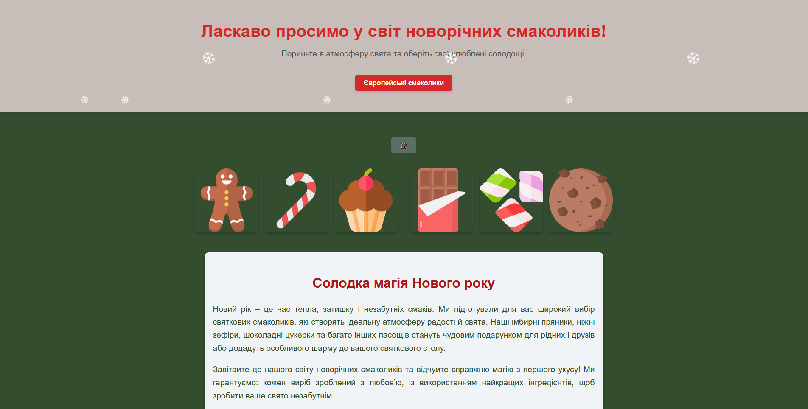
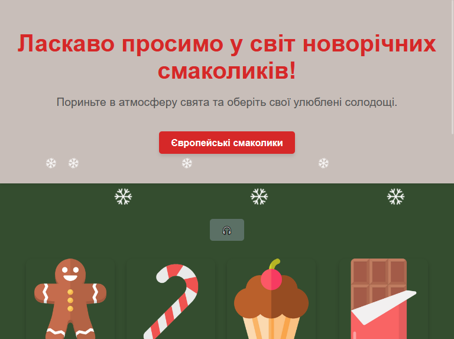
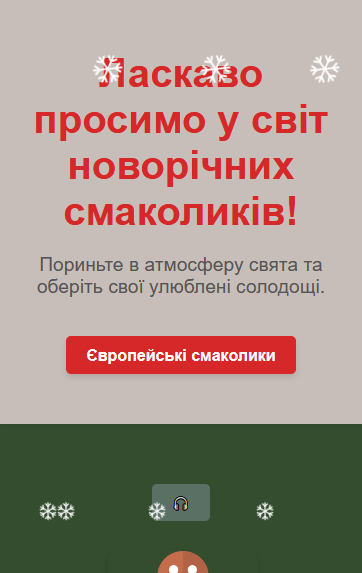
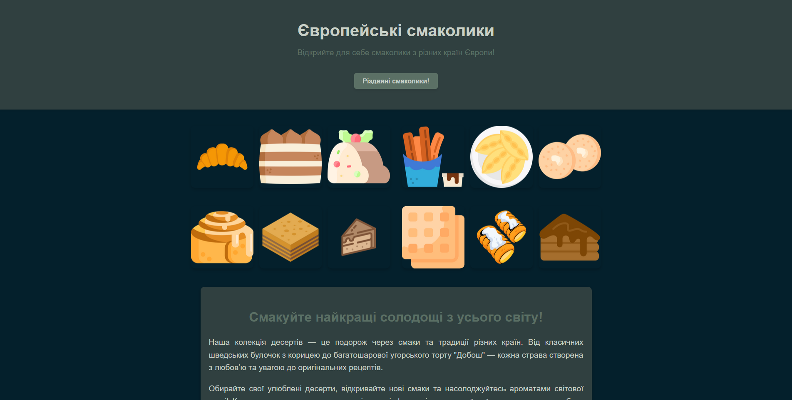
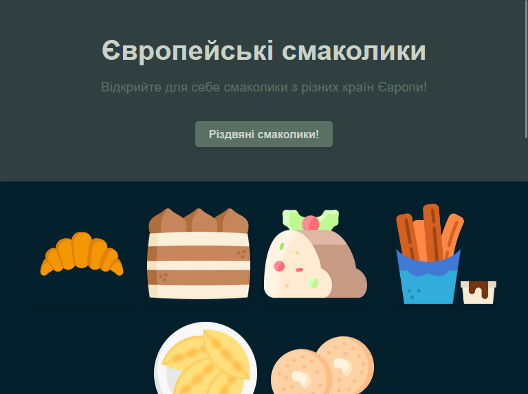
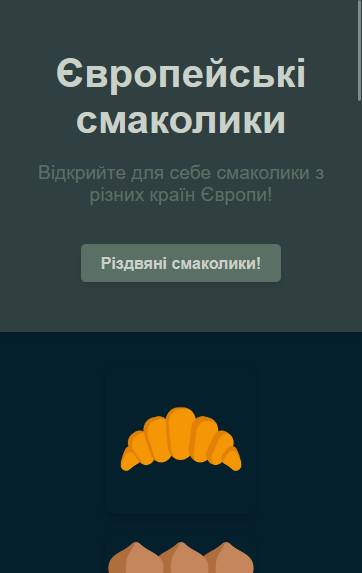

Автор: Гліб Лавренко
Дата: 2024
Мета: Святковий магазин новорічних солодощів з двома сторінками: головна з асортиментом та сторінка європейських десертів.
Двосторінковий сайт про новорічні та європейські солодощі. Головна сторінка занурює у святкову атмосферу та презентує асортимент: імбирні пряники, зефіри, шоколад ручної роботи, кекси та льодяники. Друга сторінка — гастрономічна подорож Європою: круасани з Франції, штрудель з Німеччини, тірамісу з Італії, трдельник з Чехії та інші десерти з історією. Проєкт демонструє навички багатосторінкової верстки та роботи з контентом.





